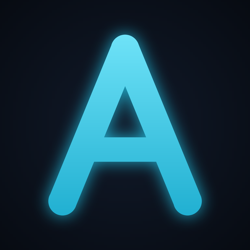

Talk to it from your desk or your phone. Powered by your own Claude — your subscription or your API key. Nothing collected, no accounts, no telemetry: there is no server to send anything to.
Download for WindowsYour notes, chat history, and settings never leave your PC. The one thing that goes to the internet is your question to Claude — under your own account, exactly as if you'd typed it there yourself.
Phone access rides your own private Tailscale network: your phone talks directly to your PC over an encrypted tunnel. Nothing transits anyone else's infrastructure — there is no relay, and no maintainer server to trust.
Adam proposes; you approve. File changes go through a review flow with automatic backups and an audit log. Zero telemetry and zero crash reporting — if you want to share diagnostics, you copy a redacted bundle yourself.
An optional one-time download adds a natural on-device voice (the open-source Kokoro model) — speech is generated on your own hardware, not in the cloud.
adam-local-… .zip under
Assets — not "Source code".SETUP in the extracted folder and follow the
wizard — it installs everything for you.
Found a problem or need a hand? Open a GitHub issue — there are templates for setup trouble, bugs, and phone-connection questions. The changelog lists what's new in every release.